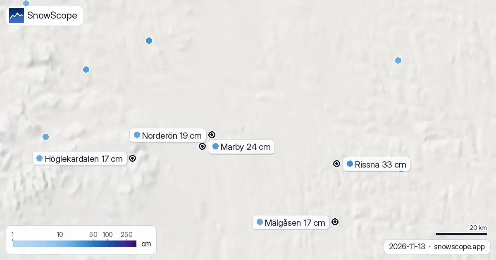

Snö i Helsingfors? Inte i helgen: 0 cm vid alla fem stationer (13 november 2026)
Helsingfors väntar fortfarande. På fredagsmorgonen mätte stationerna i Kajsaniemi, Gumtäkt, Esbo Hagalund, Helsingfors-Vanda flygplats och Noux alla barmark. Medan Uleåborg och Rovaniemi blev vita den här veckan har sydkusten inte fått en enda centimeter som legat kvar.
Se snöprognosen för Helsinki live i SnowScope-appenSnödjup, pudervarningar och 3D-kartan, gratis.Var är närmaste snön?
Den närmaste uppmätta snön till huvudstaden i dag är 2 cm vid Kiikala flygfält nära Salo, 78 km västerut. Norr om det börjar det vita på allvar först kring 64:e breddgraden: av de finska stationerna mellan 64:e och 66:e breddgraden, runt Uleåborg, har 23 av 25 snö.
I hela landets södra band, från Åbo till Villmanstrand, mätte bara 6 av 53 stationer någon snö, och ingen mer än 2 cm.

När blir Helsingfors vitt?
Vår snöhistorik för staden omfattar 46 vintrar. Den 13 november var marken vit i 11 av dem, och mittvärdet för datumet är noll. Hälften av vintrarna hade fått sin första bestående snö den 20 november, så den kommande veckan är när staden brukar få sin chans.
Helsingfors tidiga snö är tunn: runt 2 cm är normalt den 1 december, 4 cm i mitten av december och runt 13 cm i mitten av januari. Var och en av de senaste fem vintrarna var staden bar det här datumet.
Helgen
Lördagen är grå och nära noll, med några tiondels millimeter duggregn och högst ett spår av blötsnö. Söndagen är torr och mildare, upp mot 8 °C. Måndagen ger regn, från lite till runt 9 mm beroende på prognos. Inget snötäcke i sikte för staden.
Tips för skidåkare
- Blöta löv och frostiga morgnar är halkrisken i helgen, inte snö: se upp på broar och strandpromenader.
- Vill du ha snö från Helsingfors får du åka långt norrut i helgen: Uleåborg är närmaste storstad med vit mark.
- Väntar du på de första skidspåren: nästa vecka är stadens vanliga fönster, men helgens prognos öppnar dem inte.
Fler kartor (externa webbplatser)
Referenser och källor
- Finnish Meteorological Institute, open data (daily snow depth) en.ilmatieteenlaitos.fi/open-data
- Open-Meteo, weather forecast data (ECMWF and ICON models) open-meteo.com/
Om siffrorna
Snödjup i dag: uppmätt vid väderstationer på morgonen den 13 november 2026 (Meteorologiska institutet i Finland). En station mäter snön på sin egen lilla yta, så några kilometer bort och hundra meter högre kan marken se annorlunda ut. Normalt snödjup för datumet: SnowScopes snöhistorik, 46 vintrar (1980-81 till 2025-26), en modell av det förflutna på stadens höjd, inte en stationsserie. Helgen: två vädermodeller (ECMWF IFS och DWD ICON via Open-Meteo), angivna som ett spann. Platser och regler: de officiella sidorna nedan.
Citera den här rapporten
För forskning, undervisning eller press: siffrorna och diagrammen får återanvändas fritt under CC BY 4.0 med den här källhänvisningen.
SnowScope (2026), Snö i Helsingfors? Inte i helgen: 0 cm vid alla fem stationer (13 november 2026), https://snowscope.app/blog/sv/2026/11/helsinki-snow-today-13-november-2026.html, hämtad 2026-11-13
SnowScope (Atlas Labs). (2026, November 13). Snö i Helsingfors? Inte i helgen: 0 cm vid alla fem stationer (13 november 2026). SnowScope snow reports. https://snowscope.app/blog/sv/2026/11/helsinki-snow-today-13-november-2026.html
BibTeX
@misc{snowscope2026helsinkisnowtoday13novem,
author = {{SnowScope (Atlas Labs)}},
title = {Snö i Helsingfors? Inte i helgen: 0 cm vid alla fem stationer (13 november 2026)},
year = {2026},
month = nov,
howpublished = {\url{https://snowscope.app/blog/sv/2026/11/helsinki-snow-today-13-november-2026.html}},
note = {Published 2026-11-13 20:09 UTC; accessed 2026-11-13}
}· CC BY 4.0 · Metoder, data och verktyg →
Följ Helsinki
Gratis: ett meddelande när nysnö är på väg, och prognosen varje morgon.
Fler snörapporter

Uppmätt snö runt Östersund den 13 november 2026: 19 cm på Norderön, 24 cm i Marby, 33 cm i Rissna. Tre till fyra gånger det vanliga snödjupet för datumet, med en kall och torr helg framför sig.

Uppmätt snödjup i Oslo den 13 november 2026: 4 cm på Blindern, 31 cm vid Bjørnholt och 37 cm på Tryvannshøgda. Hur en vanlig mitt i november ser ut och vad helgen gör med snön.

Uppmätt snö på marken den 13 november 2026 i Oslo, Bergen, Trondheim, Tromsø, Stockholm, Göteborg, Östersund, Umeå, Luleå, Kiruna, Helsingfors, Tammerfors, Uleåborg och Rovaniemi: från 20 cm i Umeå till barmark i Kiruna.